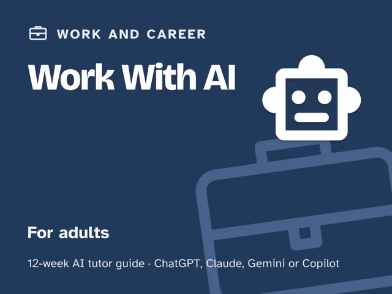
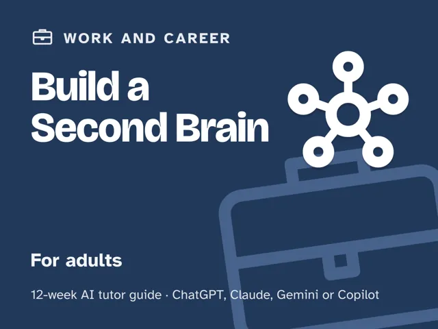

Build a Second Brain
$29Instant download: a PDF to read, a browser copy, and the AI-tutor file you hand straight to any AI assistant.Buy it on Etsy →
Take the free placement check first: 15 minutes, and it names the week to start at.
A masterclass you actually finish, because every week ends with a checkpoint you either demonstrate or redo. You read and learn constantly and forget almost all of it, not because your memory is bad, but because you never built a system. This 12-week plan installs the five moves that turn scattered information into usable knowledge: capture what matters, organize for retrieval, connect ideas across notes, review on a schedule, and create real output from what you keep. An AI tutor coaches you through it, testing whether you can actually retrieve and use what you've captured, not just that you saved it.
Format: self-paced, 12 weeks. You lead one fully scripted ~60-minute session each week: every step timed and written out for you, so no note-taking or AI expertise is needed. Works with any modern chat AI (free versions are enough; the guide shows complete beginners how to set one up in five minutes) and any note app or notebook you already have.
What you get
This is a digital guide: a deep, ready-to-run manual for 12 weekly ~60-minute sessions, with no printing required, no blank pages to fill in on your own. - 12 weekly sessions, each with a plain-language concept, a concrete worked example, a minute-by-minute session plan with the AI-tutor prompts built in, a "show me" checkpoint, common mistakes to avoid, and practice on material you're actually learning. - "Never used an AI chat assistant? Start here": a five-minute onboarding that takes a complete beginner from zero to ready, using free AI assistants (no paid plan needed). - Four rescue prompts in the front matter for when the backlog feels overwhelming, the AI starts writing your notes for you, things feel too easy or you've stalled, or you want to check you truly understand something rather than just filed it. - A working personal knowledge system you design and stock with real notes in the two project weeks, yours to keep running for life, in whatever tool you already use.
The 12 weeks
- Why You Forget, and What a Second Brain Really Is
- Capturing What Actually Matters
- Organizing for Retrieval, Not Hoarding
- Notes in Your Own Words
- Connecting Ideas Across Notes
- Turning Notes Into Output
- Reviewing and Spaced Recall
- Choosing Your Tools (Any App Will Do)
- The Weekly Review Ritual
- Project Week I: Design Your Knowledge System
- Project Week II: Build and Stock Your System
- Demo Day and the Lifelong Habit
Who it's for
Adults who read and learn constantly but forget it all and want to keep and use what they know: knowledge workers, students, lifelong readers, anyone tired of highlighting books and bookmarking articles they'll never see again. No note-taking background assumed, and no specific app required.
Why this instead of a free chatbot
Ask a raw chatbot to help you take notes and it'll happily summarize an article for you, which teaches you nothing and builds nothing. This pack ships the method and honesty it lacks: a real progression through capture, organization, connection, review, and creation, and a tutor set up to test whether you can actually retrieve a note from memory or use it in real output, not just that you saved it somewhere. The difference between a pile of highlights and a system you can think with.
FAQ
- Do I need any note-taking experience? None. Week 1 starts with the mental model, and every week builds on real material you're already reading, working on, or learning.
- Never used an AI chat assistant before? That's fine; the guide's first section walks complete beginners through setup in about five minutes.
- Which AI does it use? Works with any modern AI assistant (ChatGPT, Claude, Copilot, Gemini), and the free version of any of them is enough. No special software, and no paid plan needed.
- Do I need a specific app, like Notion, Obsidian, or Evernote? No. This teaches the method, not a tool. Week 8 helps you choose or confirm whatever you already have, and the tutor checks it against what the method needs, not against a feature list.
- Is this Zettelkasten, or GTD, or PARA? It draws on the same underlying ideas (capture, organize, connect, review, create), taught as one coherent system rather than requiring you to learn a named framework or its jargon.
- Refunds? Standard marketplace refund policy applies.
$29Instant download: a PDF to read, a browser copy, and the AI-tutor file you hand straight to any AI assistant.Buy it on Etsy →